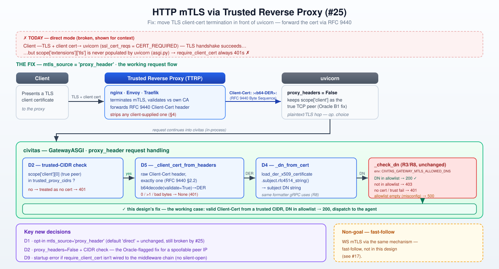

HTTP mTLS via Trusted Reverse Proxy (#25)¶
Status: ✅ Approved v2 — Oracle-reviewed, two blockers + five should-fix items folded in;
maintainer signed off 2026-07-06 on all three open calls (§10: Q1 hard error, Q2 full nginx+Envoy+Traefik
examples, Q3 diagram). Plan → Momus → implementation next.
Source: GH #25; docs/design/gateway-auth.md (R3, v0.7.0); docs/design/gateway-ws-grpc-auth.md (R8, v0.7.2)
Builds on: R3 mTLS DN-allowlist authorization (civitas/gateway/mtls.py), R8's shared
_check_dn/_dn_from_pem primitives (civitas/gateway/mtls.py, extracted for exactly this reuse).
v2 changelog (Oracle review, folded in): - 🔴→✅ B1 — D2's trust check read an untrustworthy peer IP.
scope["client"]is rewritten by uvicorn'sProxyHeadersMiddlewarefrom the client-suppliedX-Forwarded-Forheader whenever the immediate peer is inforwarded_allow_ips(uvicorn defaults:proxy_headers=True,forwarded_allow_ips="127.0.0.1"— civitas'suvicorn.Configcall,core.py:201-210, overrides neither). In the most common topology (a co-located sidecar proxy on loopback that forwards XFF — nginx/Envoy/Traefik all do this by default),scope["client"]silently becomes the external client's IP, not the proxy's — the CIDR check then compares the wrong value and either rejects every legitimate client (operator put the proxy's CIDR intrusted_proxy_cidrs) or, if widened, lets any client landing inside that CIDR self-attest a certificate via XFF — the exact bypass D2 exists to prevent. Fix: civitas now explicitly ownsproxy_headers=Falseon uvicorn's config whenevermtls_source="proxy_header", soscope["client"]is always the true TCP peer, regardless of uvicorn's defaults or a$FORWARDED_ALLOW_IPSenv var. Trade-off made explicit in D2:client_ip(used by rate-limiting/logging) becomes the proxy's IP in this mode — recovering the real client IP from XFF for those consumers is a documented non-goal (§8), not an oversight. - 🔴→✅ B2 — D5's function signature couldn't enforce D2's check. The v1 extractor took onlyheaders: dict[str, str]— no peer IP, notrusted_proxy_cidrs— so an implementer following the doc literally would ship an extractor with no trust check at all. Fix:_client_cert_from_headersnow takes the full ASGIscope(mirroring_client_cert_from_scope's existing signature) plustrusted_proxy_cidrs, checks the peer IP first (cheap, no parsing), and reads the rawscope["headers"]list rather than an already-flattened dict — which also fixes the singleton check (next point). - 🟡→✅ S1 (YAML plumbing):mtls_source/trusted_proxy_cidrsadded toGatewayAuthConfig(security/config.py) and wired throughruntime.py's topology loader, mirroringtls_ca_cert/client_cert_mode's existing YAML path. (Note:grpc_enabled/ws_routesare not yet wired through YAML at all — a pre-existing gap predating this design, out of scope here.) - 🟡→✅ S2 (RFC 9440 parsing robustness):base64.b64decode(s, validate=True)(not the lenient default, which silently drops non-alphabet characters); explicit:-prefix/suffix check instead of.strip(":")(which would also strip repeated colons); reading the raw header list (from the B2 fix) lets the extractor actually enforce RFC 9440's "MUST NOT... occur multiple times" — multipleClient-Certoccurrences now fail closed exactly like a malformed/absent header, instead of silently asserting an unenforceable claim. - 🟡→✅ S3 (exception discipline + startup dependency check): the extractor catches onlybinascii.Error/ValueError(bad base64 / bad DER) →None(never a 500);cryptographyavailability forproxy_headermode is now validated eagerly aton_start(mirroringJwtVerifier's eager-build pattern), so a missing dependency is a loud startupConfigurationError, never silently masked as a per-request 401. - 🟡→✅ S4 (mtls_sourceruntime validation): added_MTLS_SOURCES = frozenset({"direct", "proxy_header"})validated in__post_init__, mirroring_CLIENT_CERT_MODES— a YAML typo like"proxy-header"now fails loudly at config time instead of silently behaving as"direct". - 🟡→✅ S5 (silent-open guard): a new startup check fires whenmtls_source="proxy_header"butcivitas.gateway.mtls.require_client_certis absent from_configured_middleware_paths()— this combination means the header extractor runs but nothing authorizes on it, an open gateway with no signal (the exact R3-M1 failure shape). Open call for maintainer sign-off: error or warn? (§10, Q1) - 🟢 N1/N2 folded:_dn_from_pem/_dn_from_dernow share one guardedcryptographyimport and one_dn_from_cert(cert) -> strformatter (single F2 point, single ImportError guard); the speculativeleaf_pemre-encode is dropped from D5's return shape ({"dn": ...}only — addleaf_pemif/when a consumer actually needs it, not speculatively). - D3 (field-sharing scope cut) — Oracle-confirmed correct, not changed, with two additions: theConfigurationErrormessage now names the concrete gRPC consequence and the two-HTTPGateway-instances workaround (§4); and an explicit escalation trigger is recorded in §8 for when a thirdclient_cert_modeconsumer tension would justify revisiting a field split, rather than doing it preemptively on two data points.

1. Problem¶
require_client_cert (R3, v0.7.0) always rejects requests with 401 client certificate required
— even from clients presenting a valid, CA-verified client certificate — because uvicorn never
populates the ASGI TLS extension (scope["extensions"]["tls"]) that _client_cert_from_scope
(asgi.py:111-124) reads. Confirmed both by upstream evidence (uvicorn PRs #1119/#1842 unmerged,
issue #400 open since 2019, issue #745 declined) and empirically in this repo: a live TLS handshake
against uvicorn with --ssl-cert-reqs 2 (CERT_REQUIRED) and a valid client cert returns
{"extension_keys": [], "tls": null}. The handshake itself succeeds (CERT_REQUIRED would reject an
invalid/missing cert before the app ever runs) — the app-visible data just never arrives.
Impact: not an auth bypass (fails closed) — but any deployment enabling client_cert_mode +
require_client_cert gets zero working clients. The feature has likely never functioned against a
real uvicorn server.
2. Current behavior (ground truth)¶
_client_cert_from_scope(asgi.py:111-124) readsscope["extensions"]["tls"]; uvicorn leaves this empty regardless of TLS configuration.GatewayConfig.client_cert_mode(core.py:52,_CLIENT_CERT_MODES = {"none", "optional", "required"}) maps to uvicorn'sssl_cert_reqs(core.py:180, via_CERT_REQS) — this part works correctly (uvicorn DOES enforce the TLS-layer handshake requirement); only the app-visible cert data is missing.require_client_cert(mtls.py:97-122) is otherwise correct and unchanged by R8: it calls the shared_check_dn(dn, allowed)predicate (mtls.py:51-73) which raises_MtlsMisconfigured/_NoCertificate/_Forbidden, mapped to 500/401/403. This logic needs zero changes — the bug is entirely upstream, in howdngets populated._dn_from_pem(pem: bytes) -> str(mtls.py:76-94) — added in R8 specifically so gRPC's DN extraction and any future HTTP/WS fix would agree on DN string format "by construction." This is the reuse point for this design.GatewayConfig.client_cert_modeis also read by gRPC (core.py:94-99, R8/D9-D10) to wireGrpcServer's own, independent, working mTLS (add_secure_port(root_certificates=..., require_client_auth=True)— gRPC readscontext.auth_context(), not the ASGI scope, so it was never affected by this bug). This shared field is the crux of Decision D3 below.
3. Design approach¶
Of the three candidates in the GH issue, only one is viable today (see Decisions):
- Reverse-proxy pattern (chosen): a TLS-terminating reverse proxy (TTRP) — nginx, Envoy, Traefik,
or any load balancer that supports client-cert forwarding — sits in front of uvicorn, does the
actual mTLS handshake, and forwards the verified client certificate to civitas via the
IETF-standardized RFC 9440
Client-Certheader (a base64-encoded DER certificate, structured-field Byte Sequence syntax:Client-Cert: :<base64-DER>:). civitas decodes it, extracts the DN via a DER-sibling of the existing_dn_from_pem, and feeds it into the unchanged_check_dnpredicate —require_client_certitself needs zero code changes. - Custom uvicorn protocol subclass (rejected): real-world examples exist (a production patch
wrapping
h11_impl.RequestResponseCycle.__init__to readtransport.get_extra_info("ssl_object")) but the upstream maintainer has stated the ASGI TLS extension spec may not be fully implementable, and the underlying protocol classes are internal, undocumented, and have already changed shape across uvicorn versions — this would be an unbounded, version-pinned maintenance liability for a first-party feature. - Switch to hypercorn (rejected): hypercorn does not implement the ASGI TLS extension either (hypercorn#62, open since Aug 2022; even a motivated third-party fork attempt was never merged upstream). Switching servers would not fix anything and would cost HTTP/3 parity work for no benefit.
This is also the deployment pattern most production ASGI mTLS setups already use in practice — uvicorn (and most Python ASGI servers) are routinely run behind a TLS-terminating proxy in production regardless of this bug.
4. Decisions¶
| # | Decision | Rationale |
|---|---|---|
| D1 ★ | New opt-in GatewayConfig.mtls_source: str = "direct", validated against _MTLS_SOURCES = frozenset({"direct", "proxy_header"}) in __post_init__ (mirrors _CLIENT_CERT_MODES, core.py:76-80 — a bad value is a loud ConfigurationError, never a silent fallback to "direct", S4). "direct" is today's behavior (uvicorn does its own TLS client-cert handshake — still broken per #25). "proxy_header" trusts an upstream TTRP's RFC 9440 Client-Cert header instead. |
RFC 9440 §4 mandates producing/consuming these headers be an explicit, default-off opt-in — never inferred from other config. A separate field (not reusing client_cert_mode) keeps "does uvicorn itself request a client cert" and "do we trust an upstream proxy's header" as two independently-toggleable, non-conflicting questions. |
| D2 ★⚠️⟳ | New GatewayConfig.trusted_proxy_cidrs: frozenset[str] — required, non-empty, when mtls_source="proxy_header", each entry validated eagerly via ipaddress.ip_network(..., strict=False) in __post_init__. Oracle B1 fix: civitas now sets proxy_headers=False on the uvicorn.Config it builds whenever mtls_source="proxy_header" (core.py, next to the existing ssl_cert_reqs= line), so scope["client"] is guaranteed to be the true TCP peer — never rewritten from a client-supplied X-Forwarded-For by uvicorn's ProxyHeadersMiddleware (which is on by default, trusting 127.0.0.1 unless overridden, and would otherwise silently substitute an attacker- or client-influenced address). The peer IP is checked against trusted_proxy_cidrs before any header parsing is attempted (D5); outside the trusted set, the Client-Cert header is ignored entirely (treated as absent) — falling through to require_client_cert's existing, unchanged _NoCertificate → 401 path. Trade-off, made explicit: GatewayRequest.client_ip (consumed by rate-limiting/logging) becomes the proxy's IP, not the original client's, whenever mtls_source="proxy_header" — recovering the real client IP via XFF for those other consumers is a documented non-goal (§8), a decision proxy_header mode makes deliberately, not a regression. |
RFC 9440 §4: "backend servers MUST only accept the Client-Cert... header fields from a trusted TTRP." A trust check keyed on a value another layer (uvicorn) can rewrite from client-controlled input is not a trust check — Oracle confirmed this is exploitable in the single most common topology (a co-located sidecar proxy that forwards XFF, which nginx/Envoy/Traefik all do by default) and is a silent, topology-dependent bypass, not a hypothetical. Owning proxy_headers is the only way to make the CIDR check mean what it claims to mean. |
| D3 ★⚠️ | mtls_source="proxy_header" requires client_cert_mode="none" (raises ConfigurationError otherwise, Oracle-confirmed correct — kept as-is). The error message names the concrete consequence: "client_cert_mode must be 'none' when mtls_source='proxy_header' (HTTP would otherwise demand a direct-TLS client cert AND trust a proxy-forwarded one simultaneously — contradictory). If this gateway also needs grpc_enabled with direct required mTLS, run gRPC on a separate HTTPGateway instance with client_cert_mode='required' and mtls_source left at its default." |
client_cert_mode is shared by HTTP (uvicorn ssl_cert_reqs) and gRPC (R8/D9-D10: GrpcServer's independent add_secure_port(require_client_auth=...)) — Oracle confirmed forcing "none" is semantically correct for HTTP itself (proxy-header and direct-cert-request are contradictory demands on the same surface), not just a validation dodge, and that splitting the field now would be a breaking GatewayConfig/YAML-topology change disproportionate to a bug-fix issue. Escalation trigger recorded for later (§8): this is the second tension on this single field (R8/D9 was the first) — a third consumer tension, or real operator demand for divergent same-instance HTTP/gRPC models, should trigger revisiting a field split (or additive *_client_cert_mode overrides), not before. |
| D4 ⟳ | Single _dn_from_cert(cert: x509.Certificate) -> str formatter (.subject.rfc4514_string()), with _dn_from_pem/_dn_from_der reduced to thin loaders sharing one guarded cryptography import. RFC 9440 encodes Client-Cert as base64 DER (not PEM) per §2.1 — x509.load_der_x509_certificate, not load_pem_x509_certificate (gRPC's auth_context()["x509_pem_cert"] is PEM; two different wire encodings from two different transports is a real constraint). |
Oracle N1: the v1 sketch (two independent siblings each re-implementing the cryptography ImportError guard) preserves R8's F2 DN-format guarantee but duplicates the dependency-guard logic. One shared guarded loader + one formatter keeps both the F2 guarantee and the guard in exactly one place each. |
| D5 ⟳ | _client_cert_from_headers(scope: dict[str, Any], trusted_cidrs: frozenset[str]) -> dict[str, Any] \| None in mtls.py, mirroring _client_cert_from_scope(scope)'s existing signature (Oracle B2 fix — the v1 signature took only a flattened header dict, which structurally cannot perform D2's peer-IP check or detect duplicate headers). Order of operations: (1) extract scope["client"], reject if outside trusted_cidrs → None; (2) scan the raw scope["headers"] list (not asgi.py's already-flattened dict, which silently collapses duplicates to the last value) for client-cert, requiring exactly one occurrence — zero or more-than-one → None (RFC 9440 §2.2: "MUST NOT... occur multiple times"); (3) strip the :...: Byte-Sequence delimiters via explicit prefix/suffix checks (not .strip(":"), which would also eat repeated colons), base64.b64decode(s, validate=True) (not the lenient default, which silently discards non-alphabet characters), load DER, extract DN via D4 — any binascii.Error/ValueError at this stage → None. Return shape is {"dn": ...} only (Oracle N2: no speculative leaf_pem re-encode — add it if/when a consumer needs it). |
Matching _client_cert_from_scope's signature means GatewayASGI._handle_http just picks one extractor by config.mtls_source and passes it the same scope either way; everything downstream (GatewayRequest.client_cert, require_client_cert) stays unaware which mode produced it — R8's D5 "shared predicate, not shared HTTP-shaped function" principle, now proven out on its first real reuse. |
| D6 | No certificate-chain validation performed by civitas in proxy_header mode. The TTRP is trusted to have already validated the client certificate against its own configured CA before forwarding Client-Cert — civitas only extracts the DN for allowlist authorization, exactly mirroring what direct mode already assumes of uvicorn's own ssl_cert_reqs-driven handshake validation. Client-Cert-Chain (RFC 9440 §2.3, optional) is intentionally not read — no current code path needs the intermediate chain. |
Matches the trust model already documented in mtls.py's module docstring for direct mode ("TLS proves signed-by-a-trusted-CA... this design reuses that same operator responsibility") — this design doesn't introduce a new trust primitive, it relocates where the already-trusted validation happens. |
| D7 | No startup wiring change to uvicorn's TLS config for proxy_header mode beyond D2's proxy_headers=False — tls_cert/tls_key/tls_ca_cert remain independently optional (an operator may run uvicorn in plaintext behind a proxy on a private network, or with its own server-only TLS to the proxy hop — both are valid, orthogonal deployment choices this design does not need to adjudicate). |
client_cert_mode="none" (forced by D3) already means none of the existing client_cert_mode != "none" validation block (core.py:81-92, requiring all three TLS fields) applies — no new validation needed here beyond D2/D3. |
| D8 (NEW, Oracle S3) | cryptography availability for proxy_header mode is validated eagerly at on_start, mirroring JwtVerifier.from_settings's eager-build pattern (core.py:176-177) — a missing dependency is a loud startup ConfigurationError, never encountered for the first time mid-request (where it would otherwise risk being masked as an ordinary 401 by D5's catch-and-return-None parsing discipline). |
Distinguishes "operator forgot to install cryptography" (a misconfig, must be loud, matches R3/R8's "never allow-all / never silent" invariant) from "client sent a malformed certificate" (an ordinary, expected, fail-closed 401) — the two must never look the same to an operator debugging why auth "isn't working." |
| D9 (NEW, Oracle S5) | Silent-open guard: at on_start, if mtls_source="proxy_header" and _MTLS_MIDDLEWARE_PATH is absent from _configured_middleware_paths(), [open call — §10 Q1: ConfigurationError or logger.warning?]. This combination means the header extractor runs every request but nothing ever authorizes on its output — a fully open gateway with zero signal. |
Same failure shape as R3's M1 and R8's D11: an operator who configured mtls_source reasonably believes "mTLS is on" for this gateway; forgetting the one-line middleware: entry silently defeats it entirely, with no error and no log line unless this guard exists. |
★ pivotal · ⚠️ needs careful review · ⟳ revised from v1
5. Threat model¶
- Header injection (the primary risk RFC 9440 itself calls out): mitigated by D2's trusted-CIDR
peer-IP check now that it reads an untamperable peer IP (
proxy_headers=False) — an attacker who cannot reach uvicorn from an allowed CIDR cannot inject aClient-Certheader at all, and cannot spoof the peer IP viaX-Forwarded-Forsince uvicorn no longer trusts that header forscope["client"]in this mode. One who can reach uvicorn from an allowed CIDR (e.g., a compromised host on the same private network segment as the real proxy) is a threat model the RFC itself defers to network-topology controls ("Other deployments that meet the requirements... are also possible" — RFC 9440 §4), same as this repo's existingdirect-mode CA-trust-anchor operator responsibility. client_ipsemantics change inproxy_headermode (Oracle B1, made explicit): rate-limiting and access logging that key onGatewayRequest.client_ipwill see the proxy's IP, not the originating client's, for any gateway withmtls_source="proxy_header"— this is the direct, accepted cost of D2's fix (owningproxy_headers=Falseto keep the trust check sound) and must be called out in operator docs (§6), not discovered by surprise.- Proxy sanitization is the operator's responsibility, not civitas's: RFC 9440 §4 requires the
TTRP itself strip any client-supplied
Client-Cert/Client-Cert-Chainheader before adding its own trusted value. civitas cannot enforce this (it has no visibility into what the proxy stripped) — this is documented as an operator/proxy-configuration requirement (§6), consistent with existing operator-trust-anchor language already inmtls.py's module docstring. - Silent-open if
require_client_certis forgotten (Oracle S5 / D9): withclient_cert_modeforced to"none"(D3), the only thing that turns header-derivedclient_certdata into an actual authorization decision is therequire_client_certmiddleware — omitting it frommiddleware:yields a fully open gateway with no direct signal. D9 makes this loud (mechanism pending sign-off, §10 Q1). - D3's scope cut: an operator needing simultaneously-divergent HTTP vs. gRPC client-cert models
on one
HTTPGatewaycannot express it in v1 — documented as a non-goal (§8) with a two-instance workaround, not silently unsupported. - Malformed/duplicate header handling: any parse failure (bad base64, non-DER bytes, more than
one
Client-Certoccurrence — now actually detectable per D5's B2 fix) is treated identically to "no header" (D5) — never a 500, never a crash;require_client_cert's existing fail-closed 401 path handles it. Missingcryptographyis the one exception: that is a startup-timeConfigurationError(D8), never a per-request 401.
6. Config¶
Two new fields on GatewayConfig: mtls_source (default "direct", backward compatible — zero
behavior change for existing deployments) and trusted_proxy_cidrs (required non-empty when
mtls_source="proxy_header"). Both are wired through the YAML topology loader the same way
tls_ca_cert/client_cert_mode already are — added to GatewayAuthConfig
(civitas/security/config.py) and its from_dict, consumed in runtime.py's http_gateway node
builder. (grpc_enabled/ws_routes remain not wired through YAML at all — a pre-existing gap
predating this design; out of scope here, noted for a future housekeeping pass.) No changes to
CIVITAS_GATEWAY_MTLS_ALLOWED_DNS or any other existing env var — the DN-allowlist authorization
step is completely unchanged (D5/D6).
Operator-facing consequences to document in docs/gateway.md:
- A worked example of the nginx/Envoy/Traefik proxy-side configuration (header name, the mandatory
strip-then-set sanitization directive per RFC 9440 §4) — a copy-pasteable example per proxy, not
just a link to the RFC.
- client_ip (rate-limiting, access logs) becomes the proxy's IP in this mode (§5).
- trusted_proxy_cidrs should be as narrow as the topology allows (the proxy's actual address(es)),
not widened to route around connectivity issues — widening it re-opens exactly the header-injection
risk D2 exists to close.
7. Test plan (outline)¶
mtls_source="proxy_header"+trusted_proxy_cidrs=[]→ConfigurationErrorat config construction (D2).mtls_source="proxy_header"+client_cert_mode != "none"→ConfigurationErrorat config construction, message names gRPC + the two-instance workaround (D3).mtls_source="not-a-real-value"→ConfigurationErrorat config construction (D1/S4).proxy_headers=Falseis actually set on theuvicorn.Configbuilt for aproxy_header-mode gateway (D2/B1 regression guard — assert the config object directly, this is the single most important test in this design given it's what the Oracle review's BLOCKER hinged on).- A request whose
X-Forwarded-Forclaims an in-allowlist IP, arriving from a peer IP outsidetrusted_proxy_cidrs→ 401 (proves XFF cannot be used to spoof the trust check post-fix — direct regression test for B1). - Valid
Client-Certheader from an allowed CIDR, DN in allowlist → 200 (full round trip against a real generated cert, mirroring R8'stls_certsfixture pattern). - Valid
Client-Certheader from an allowed CIDR, DN not in allowlist → 403 (unchanged_check_dn/_Forbiddenpath, now reached via the new extractor). - Valid
Client-Certheader from a disallowed CIDR → 401 (header ignored, falls through to_NoCertificate— same code path as no header at all). - Two
Client-Certheaders on one request (from an allowed CIDR, both otherwise valid) → 401, not "use the last one" (D5/B2 singleton enforcement, only possible once the extractor reads rawscope["headers"]). - Malformed
Client-Certheader (bad base64 / non-DER bytes / missing colon delimiters) from an allowed CIDR → 401, not 500 (D5 exception discipline). cryptographynot importable +mtls_source="proxy_header"→ConfigurationErroraton_start, never surfaces as a per-request 401 (D8).mtls_source="proxy_header"configured,require_client_certabsent frommiddleware:→ the D9 guard fires (error or warning per §10 Q1 sign-off).- No
Client-Certheader at all → 401 (regression guard — unchanged). _dn_from_der/_dn_from_pemround-trip through the shared_dn_from_cert(D4): same certificate, DER via one loader, PEM via the other → byte-identical DN string (extends R8's F2 regression guard).directmode (default,mtls_sourceunset) — all existing R3/R8 mTLS tests pass unmodified (regression guard: this design changes zero behavior for deployments not opting in).
8. Non-goals / fast-follows¶
- HTTP/3 proxy-header mode — HTTP/3 (
enable_http3) isaioquic-only, no reverse-proxy story is designed here; out of scope, unchanged from R3's existing HTTP/3 + mTLS incompatibility. Client-Cert-Chain(RFC 9440 §2.3) — not read; no current authorization logic needs intermediate certs beyond the leaf DN.- Recovering the real client IP for rate-limiting/logging in
proxy_headermode (Oracle B1 trade-off, §5) —client_ipbecomes the proxy's IP; reading it back fromX-Forwarded-Forfor non-security consumers (rate-limiting, access logs) specifically is a distinct, lower-risk problem from the trust check itself and is deferred, not solved here. - WS mTLS via proxy header —
docs/design/gateway-ws-grpc-auth.md§8 explicitly deferred WS-mTLS pending this issue. Once this design ships, the identical_client_cert_from_headers/D4/D5 extraction applies unchanged to the WS upgrade handshake (headers are available in the ASGIwebsocketscope the same way) — this is a natural, low-risk fast-follow, not bundled into this design to keep #25's scope (explicitly HTTP-only per the issue title) tight and reviewable. - Simultaneously-divergent HTTP/gRPC client-cert models on one
HTTPGateway— D3's scope cut. Escalation trigger (Oracle): revisit only on a thirdclient_cert_modeconsumer tension, or concrete operator demand for this exact combination — not preemptively. - YAML topology support for
grpc_enabled/ws_routes— pre-existing gap, unrelated to this design, noted for a separate housekeeping issue.
10. Resolved decisions (maintainer sign-off — 2026-07-06)¶
- ✅ Q1 — D9 stands as a hard
ConfigurationError(not a warning):mtls_source="proxy_header"withoutrequire_client_certinmiddleware:refuses to start. - ✅ Q2 —
docs/gateway.mdgets full worked config examples for all three proxies (nginx, Envoy, Traefik) — not just nginx-in-full-with-pointers-for-the-rest. - ✅ Q3 — Diagram created:
docs/assets/gateway-http-mtls-proxy.svg, showing the client → TTRP (TLS terminate +Client-Certheader) → uvicorn (proxy_headers=False) → civitas (D2 CIDR check → D5 extraction → D4 DN →_check_dn) request flow, plus the rejected-topology note (uvicorn's ASGI TLS extension gap) for context against thedirect-mode failure this design fixes.
11. References¶
- GH #25; GH #17;
docs/design/gateway-auth.md(R3);docs/design/gateway-ws-grpc-auth.md(R8);civitas/gateway/{mtls,asgi,core,grpc_server}.py. - RFC 9440 — Client-Cert HTTP Header Field (IETF, 2023) — the wire format and security requirements this design implements.
- Prior art / evidence gathered for this design: uvicorn issue
#400 (open since 2019), PR
#1119 (unmerged); hypercorn issue
#62 (open, TLS extension not implementable per
maintainer); nginx
$ssl_client_escaped_cert/$ssl_client_s_dnvariables; Envoy XFCC (x-forwarded-client-cert) header docs; TraefikPassTLSClientCertmiddleware docs.